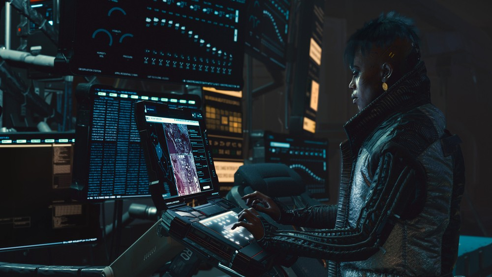
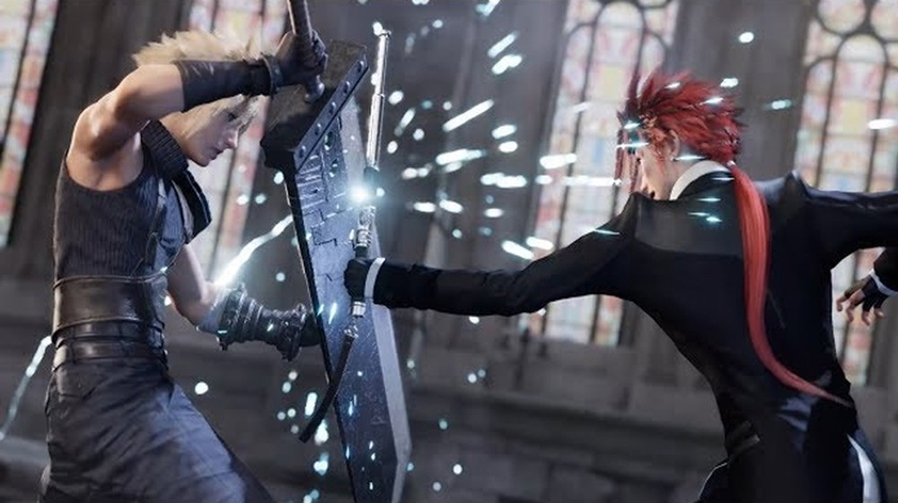

One would imagine that developer Naughty Dog would soon announce The Last of Us Part II after the resounding success of The Last of Us, released on June 14, 2013 initially on PlayStation 3 - which later came to PlayStation 4 via the Remastered edition, which includes its first and only story DLC, Left Behind.
With the announcement and expectations rising more and more with each new trailer with unprecedented cutscenes and new gameplay; we've gathered all the information revealed by Naughty Dog so far, in one place. Below, therefore, you can check everything that was announced and shown by the developer. Just come:
Listening mode is back, and additionally, players will need to deal with injuries by removing sharp objects and cleaning wounds to be able to proceed.
It will be possible to jump between small gaps or to reach higher points or over enemies to catch them off guard.
Dodge is also listed among Ellie's new moves, as well as blocking some attacks and also crawling to increase stealth and escape the enemies' field of view.
Ellie will be able to evolve three different skill trees:
Cyberpunk 2077 should be one of the great games of this year, scheduled to launch in September 2020, after the announcement of the postponement, and with great expectations among fans and the market. It is a great game, from CD Projekt RED, the same as The Witcher 3 Wild Hunt and Gwen The Witcher Card Game.
Com Cyberpunk, o estúdio se afasta um pouco dos estilos que está acostumado em produzir, apesar de manter suas raízes no RPG. Além disso, a jogabilidade será em primeira pessoa na maior parte do tempo, mas isso não faz do game um FPS. Confira outras perguntas e respostas a respeito do lançamento de Cyberpunk 2077, a seguir.
The game is a futuristic adventure. It is an RPG with a large open world, which takes place inside the city of Mega City. The protagonist is known only as "V", with a look that can be personalized and will become unique. In addition, the game features the participation of actor Keanu Reeves in the role of Johny Silverhand, a character who should help the protagonist in some moments. Expect many scenarios with neon, technological weapons, hackers and other futuristic elements in a cyberpunk world.
Cyberpunk 2077 will be a game with a focus on one player, but with some multiplayer elements. The title should have a vast campaign, with a lot of option to be done on the map, but without forgetting who prefers to follow the story.
Final Fantasy 7 Remake is a long-awaited reimagination, by Square Enix, of one of the greatest video game classics, originally released in 1997, for the PlayStation One. In addition to updating the visuals of the original Final Fantasy 7, the game for PlayStation 4 (PS4) promises several changes and new features - some have even been shown in trailers. Check, in the following lines, all information about the main points of the game, such as the updated gameplay, the return of characters, such as Barret, Aerith and Tifa, release date, in addition to the possibility of versions for Xbox One and PC.
Announced during E3 2015, Final Fantasy 7 Remake is a reimagination of the acclaimed PlayStation One RPG. Unlike remakes that are more faithful to the source material, the Final Fantasy 7 remake is not just intended to recreate the original game exactly the way it was with improved graphics. The game tells the same story, but with totally new gameplay and elements that were not present in the PSOne version. The game's director, Tetsuya Nomura, has already confirmed that there are unpublished bosses, for example.
O jogo se passa em um planeta semelhante à Terra chamado Gaia, que conta com uma força vital própria que é extraída pela empresa Shinra. A companhia transforma essa energia na substância "mako", que abastece tanto o progresso da civilização, como a cidade de Midgar, quanto planos ocultos da Shinra. Para impedir os danos causados pela extração, um grupo radical chamado Avalanche inicia uma luta armada contra a empresa. O protagonista da história é Cloud Strife, um antigo soldado do braço armado da Shinra, conhecido como Soldier, e atual mercenário contratado pela Avalanche.